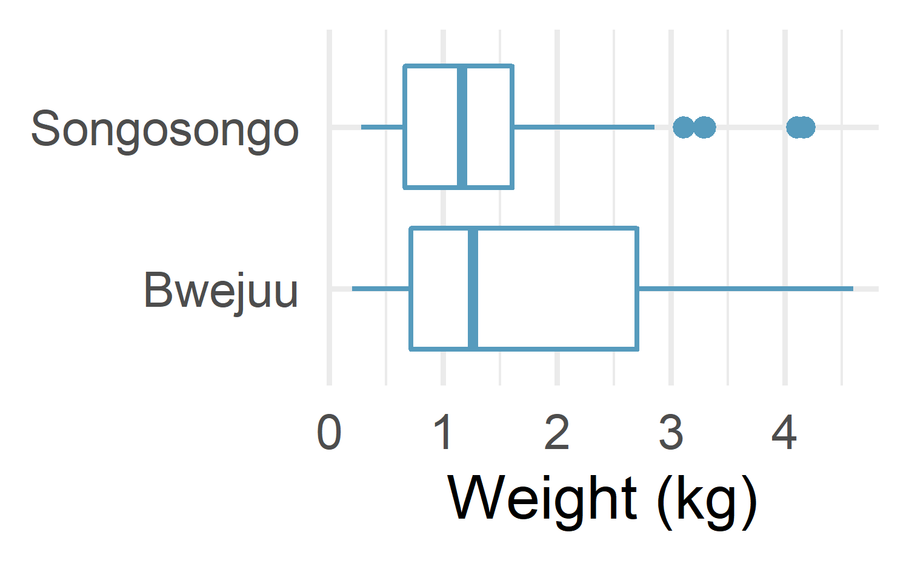
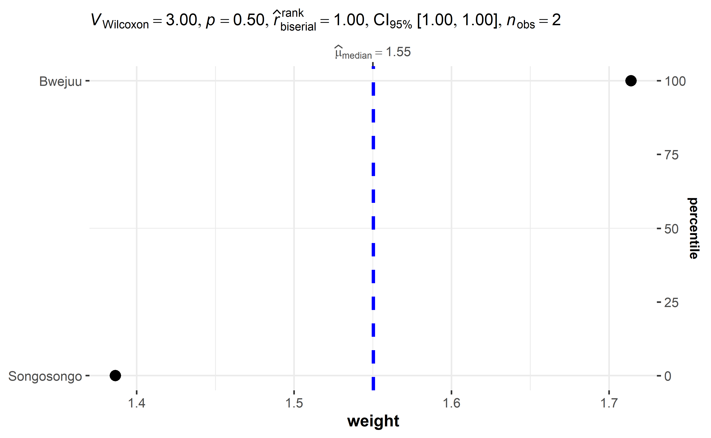
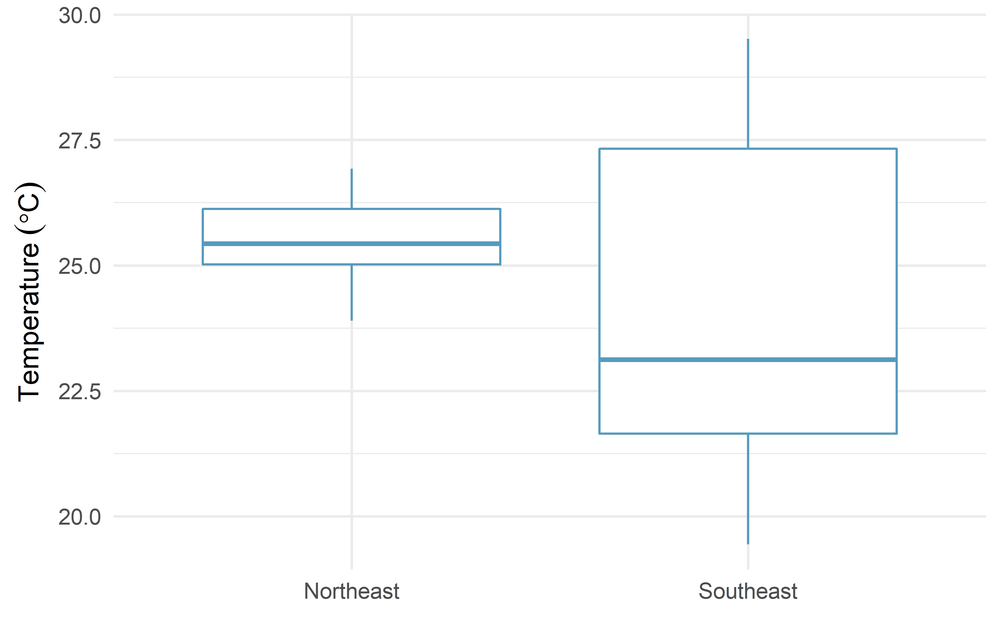
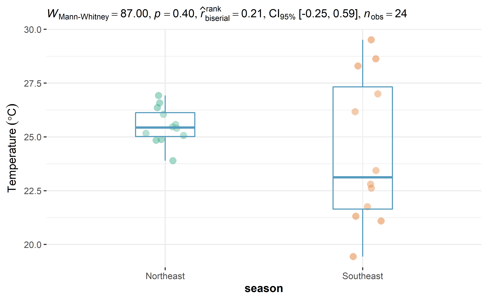
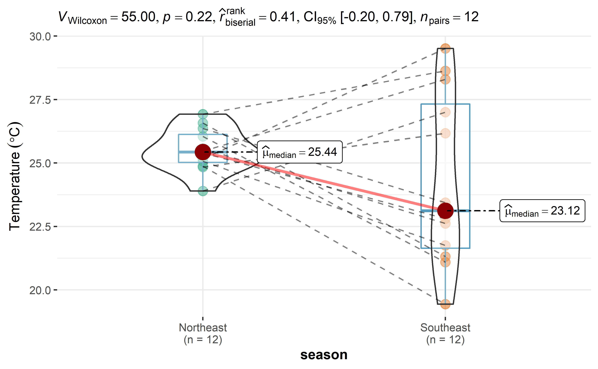

15 Two Independent Samples Non-parametric
In this section, we learn how to compare two groups when the normality assumption is violated, using the Wilcoxon test.
The Wilcoxon test is a non-parametric test, meaning that it does not rely on data belonging to any particular parametric family of probability distributions. Non-parametric tests have the same objective as their parametric counterparts. However, they have two advantages over parametric tests: they do not require the assumption of normality of distributions and they can deal with outliers. A Student’s t-test for instance is only applicable if the data are Gaussian or if the sample size is large enough (usually n≥30n≥30, thanks to the central limit theorem). A non-parametric test should be used in other cases.
One may wonder why we would not always use a non-parametric test so we do not have to bother about testing for normality. The reason is that non-parametric tests are usually less powerful than corresponding parametric tests when the normality assumption holds. Therefore, all else being equal, with a non-parametric test you are less likely to reject the null hypothesis when it is false if the data follows a normal distribution. It is thus preferred to use the parametric version of a statistical test when the assumptions are met.
In the remaining of the article, we present the two scenarios of the Wilcoxon test and how to perform them in R through two examples.
15.1 Two different scenarios
As for the Student’s t-test, the Wilcoxon test is used to compare two groups and see whether they are significantly different from each other in terms of the variable of interest.
The two groups to be compared are either:
independent, or
paired (i.e., dependent)
There are actually two versions of the Wilcoxon test:
The Mann-Withney-Wilcoxon test (also referred as Wilcoxon rank sum test or Mann-Whitney U test) is performed when the samples are independent (so this test is the non-parametric equivalent to the Student’s t-test for independent samples).
The Wilcoxon signed-rank test (also sometimes referred as Wilcoxon test for paired samples) is performed when the samples are paired/dependent (so this test is the non-parametric equivalent to the Student’s t-test for paired samples).
Luckily, those two tests can be done in R with the same function: wilcox.test(). They are presented in the following sections.
15.2 Independent samples
For the Wilcoxon test with independent samples, suppose that we want to test whether weight of octopus differ between two sampling sites.
15.3 Data
The data we are going to use is octopusdataset. The dataset contains total length (tl) and weight (weight) of 100 individual landed at two different villages along the coastal waters of Tanzania. We can read and import the dataset using read_csv function from readr package
It always good practise to visualize the data and understand the overying patterns before performing the statistical test in R. The best way to do so is to draw and compare boxplots of the quantitative variable octopus’s weight by sites.

When the sample is normal distributed, the Student’s t-test (the parametric version of the Wilcoxon test) is often used to test whether two independent samples are statistically significant. However, when the sample fail the assumptions of normal distribution, then it is recommended to use the non-parametric test.
Remember that the null and alternative hypothesis of the Wilcoxon test are as follows:
H0H0: the 2 groups are equal in terms of the variable of interest
H1H1: the 2 groups are different in terms of the variable of interest
Applied to our research question, we have:
H0H0: the weight of octopus from Bwejuu and Songosongo are equal
H1H1: the weight of octopus from Bwejuu and Songosongo are not equal
#>
#> Wilcoxon rank sum test with continuity correction
#>
#> data: tl by village
#> W = 1586, p-value = 0.02
#> alternative hypothesis: true location shift is not equal to 0The p-value is 0.02. Therefore, at the 5% significance level, we reject the null hypothesis and we conclude that weight of octopus are significantly different between Bwejuu and Songosongo (W = 1586, p-value = 0.02).
Given the boxplot presented above showing weight of octopus by sampling village, it is clear that octopus caught in coastal waters of Bwejuu are big in size compared to those in Songosongo. This can be tested formally by adding the alternative = "greater" argument to the wilcox.test() function;
#>
#> Wilcoxon rank sum test with continuity correction
#>
#> data: tl by village
#> W = 1586, p-value = 0.01
#> alternative hypothesis: true location shift is greater than 0The p-value is 0.01. Therefore, at the 5% significance level, we reject the null hypothesis and we conclude that weight of octopus are significantly high at Bwejuu than Songosongo (W = 1586, p-value = 0.01).

15.4 Paired samples
For this second scenario, consider that we administered a math test in a class of 12 students at the beginning of a semester, and that we administered a similar test at the end of the semester to the exact same students. We have the following data:
#> # A tibble: 24 x 2
#> season sst
#> <chr> <dbl>
#> 1 Northeast 24.9
#> 2 Southeast 19.4
#> 3 Northeast 23.9
#> 4 Southeast 27.0
#> 5 Northeast 25.6
#> 6 Southeast 22.6
#> # ... with 18 more rows
In this example, it is clear that the two samples are not independent since the same twelve samples of temperature during the two monsoon seasons. Supposing also that the normality assumption is violated (and given the small sample size), we thus use the Wilcoxon test for paired samples, with the following hypotheses:5
H0H0: temperature during northeast and southeast are equal
H1H1: temperature during northeast and southeast are equal
The R code for this test is similar than for independent samples, except that we add the paired = TRUE argument to the wilcox.test() function to take into consideration the dependency between the 2 samples:
#>
#> Wilcoxon signed rank exact test
#>
#> data: sst by season
#> V = 55, p-value = 0.1
#> alternative hypothesis: true location shift is greater than 0
